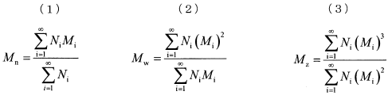

令和3年度 問14 高分子化学
次の記述の【 】に入る語句及び数値の組合せとして、最も適切なものはどれか。
平均分子量には数平均分子量【 ア 】、重量平均分子量【 イ 】、z平均分子量（Mz）などがある。分子量10,000の高分子1モルと分子量1,000の高分子1モルを混合した場合、その数平均分子量は【 ウ 】で、重量平均分子量は【 エ 】となる。また、分子量10,000の高分子1 gと分子量1,000の高分子1 gを混合した場合、その数平均分子量は【 オ 】で、重量平均分子量は【 カ 】となる。
| ア | イ | ウ | エ | オ | カ | ||
|---|---|---|---|---|---|---|---|
| ① | M n | M w | 5,500 | 9,182 | 1,818 | 5,500 | |
| ② | M w | M n | 5,500 | 9,182 | 1,818 | 5,500 | |
| ③ | M n | M w | 9,182 | 5,500 | 9,182 | 5,500 | |
| ④ | M w | M n | 5,500 | 1,818 | 5,500 | 5,500 | |
| ⑤ | M n | M w | 5,500 | 9,182 | 9,182 | 1,818 |
ある高分子が分子量Miの分子Ni個からなる混合物である場合、その数平均分子量Mnは式（1）で表され、分子の個数によって平均した値として求められます。また、重量平均分子量Mwは重量分率による分子量の平均であり、式（2）で与えられます。さらに、高分子量成分の平均分子量への寄与を重視したものがz平均分子量Mzであり、式（3）のように定義されています。

分子量10,000の高分子1モルと分子量1,000の高分子1モルを混合した場合、数平均分子量Mnは(10,000×1＋1,000×1) / (1＋1)＝5,500です。重量平均分子量Mwは(10,0002×1＋1,0002×1) / (10,000×1＋1,000×1)＝9,182です。1モルに含まれる分子の個数はアボガドロ数ですので、モル数を用いた計算が可能です。
分子量10,000の高分子1 gと分子量1,000の高分子1 gを混合した場合、それぞれのモル数は1/10,000 mol、1/1,000 molです。数平均分子量Mnは(10,000×1/10,000＋1,000×1/1,000) / (1/10,000＋1/1,000)＝1,818です。重量平均分子量Mwは(10,0002×1/10,000＋1,0002×1/1,000) / (10,000×1/10,000＋1,000×1/1,000)＝5,500です。